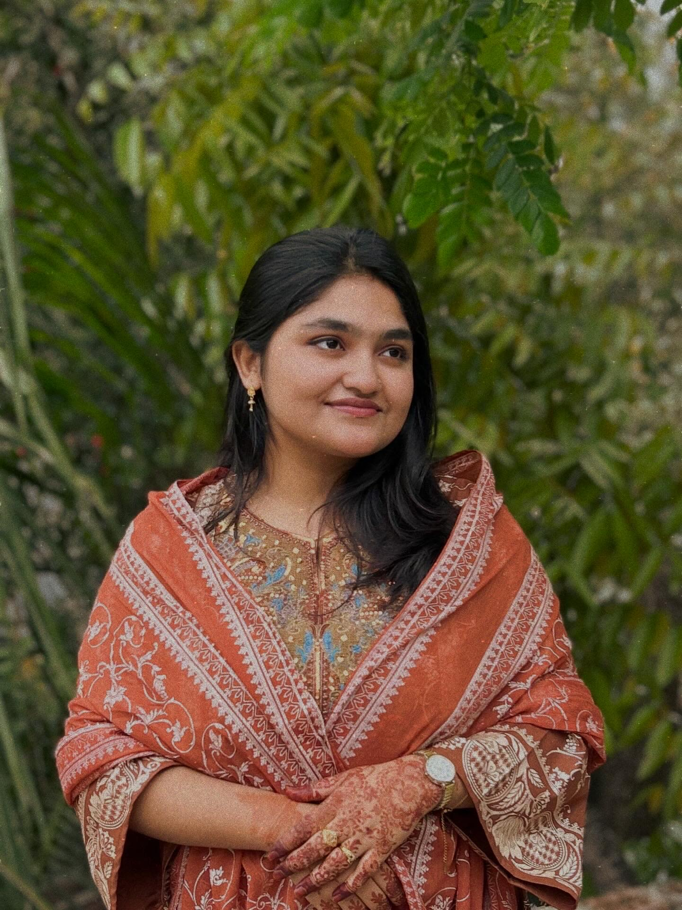

Modeling networks that learn to slice themselves.
I'm Shima — an undergraduate researcher at Jagannath University working at the intersection of graph neural networks, multi-agent reinforcement learning, and next-generation network design. My thesis builds AI-driven slicing for 5G-and-beyond networks in healthcare.

Research interests
Grounded in networking, sharpened by machine learning.
I work on artificial intelligence, machine learning, deep learning, and networking — with a particular focus on how graph-based learning can make communication networks smarter. As a Research Assistant in the Network and IoT Lab at Jagannath University, I studied graph signal processing and graph neural networks, and build AI-driven network slicing and resource allocation models using SDN.
My final year thesis, Intelligent-Slicing, applies Multi-Agent Deep Deterministic Policy Gradient (MADDPG) to design a profitable, AI-assisted slicing framework for 5G-and-beyond healthcare networks — work that has already contributed to an IEEE peer-reviewed publication.
Education & research timeline
From secondary school to peer-reviewed publications.
Final year thesis
Intelligent-Slicing: A Profitable Framework for 5G and Beyond Networks in Healthcare
- Designed an AI-assisted network slicing framework for healthcare networks
- Applied Multi-Agent Deep Deterministic Policy Gradient (MADDPG) for decision-making
- Integrated dynamic pricing mechanisms for healthcare network services
- Research outcomes contributed to an IEEE peer-reviewed publication
Peer-reviewed conference papers
All three accepted in 2025.
Applied builds
Across web, mobile, IoT, and data science.
Toolkit & languages
Beyond the lab
- Vice ChairIEEE CS, JnUJan 2024 – Dec 2025
- Program CoordinatorIEEE CS, JnUJan 2023 – Dec 2023
- General SecretaryIEEE CS, JnUJan 2022 – Dec 2022
- Impactful Tech Award (Runner-up)University of Sydney Coding Fest2025
- Leadership Excellence AwardIEEE CS Student Branch2024
- Best Campus AmbassadorIEEE Technical Writing Contest2023